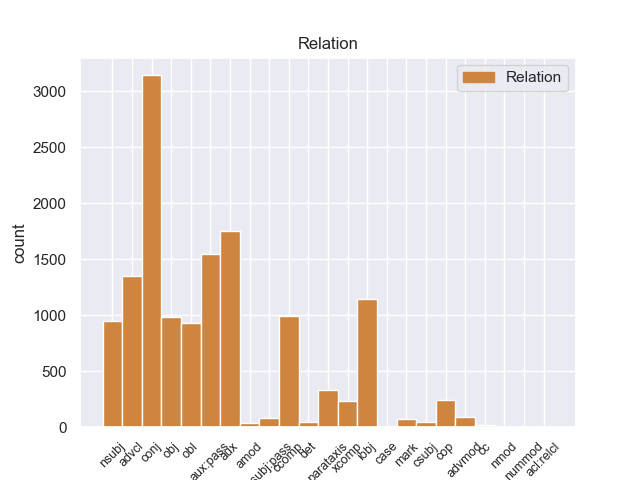
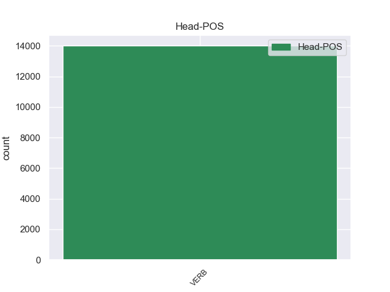
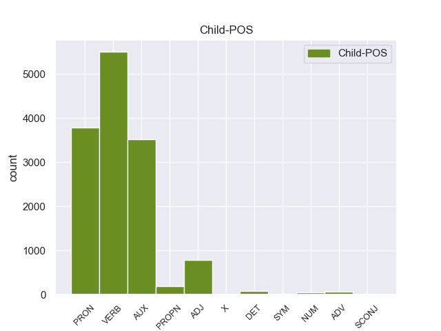

Distribution of features within this leaf



Agreement Rules sorted by frequency.
When the head token is VERB and the dependent token is VERB.
1 En _ _ _ _ 0 _ _ _
2 1991 _ _ _ _ 0 _ _ _
3 , _ _ _ _ 0 _ _ _
4 como _ _ _ _ 0 _ _ _
5 ya _ _ _ _ 0 _ _ _
6 está _ _ _ _ 0 _ _ _
7 indicado _ _ _ _ 0 _ _ _
8 en _ _ _ _ 0 _ _ _
9 el _ _ _ _ 0 _ _ _
10 párrafo _ _ _ _ 0 _ _ _
11 anterior _ _ _ _ 0 _ _ _
12 , _ _ _ _ 0 _ _ _
13 se _ _ _ _ 0 _ _ _
14 creó crear VERB _ Mood=Ind|Number=Sing|Person=3|Tense=Past|VerbForm=Fin 0 _ _ _
15 un _ _ _ _ 0 _ _ _
16 equipo _ _ _ _ 0 _ _ _
17 ad _ _ _ _ 0 _ _ _
18 hoc _ _ _ _ 0 _ _ _
19 para _ _ _ _ 0 _ _ _
20 averiguar _ _ _ _ 0 _ _ _
21 como _ _ _ _ 0 _ _ _
22 se _ _ _ _ 0 _ _ _
23 podía _ _ _ _ 0 _ _ _
24 desarrollar _ _ _ _ 0 _ _ _
25 el _ _ _ _ 0 _ _ _
26 Dialogo _ _ _ _ 0 _ _ _
27 Social _ _ _ _ 0 _ _ _
28 , _ _ _ _ 0 _ _ _
29 este _ _ _ _ 0 _ _ _
30 equipo _ _ _ _ 0 _ _ _
31 estaba _ _ _ _ 0 _ _ _
32 formado formar VERB _ Gender=Masc|Number=Sing|VerbForm=Part 14 parataxis _ _
33 por _ _ _ _ 0 _ _ _
34 representantes _ _ _ _ 0 _ _ _
35 de _ _ _ _ 0 _ _ _
36 todas _ _ _ _ 0 _ _ _
37 las _ _ _ _ 0 _ _ _
38 organizaciones _ _ _ _ 0 _ _ _
39 relacionadas _ _ _ _ 0 _ _ _
40 con _ _ _ _ 0 _ _ _
41 CES _ _ _ _ 0 _ _ _
42 , _ _ _ _ 0 _ _ _
43 UNICE _ _ _ _ 0 _ _ _
44 y _ _ _ _ 0 _ _ _
45 CEEP _ _ _ _ 0 _ _ _
46 ; _ _ _ _ 0 _ _ _
When the head token is VERB and the dependent token is VERB. and the head token is VERB and the dependent token is AUX.
1 En _ _ _ _ 0 _ _ _
2 1991 _ _ _ _ 0 _ _ _
3 , _ _ _ _ 0 _ _ _
4 como _ _ _ _ 0 _ _ _
5 ya _ _ _ _ 0 _ _ _
6 está _ _ _ _ 0 _ _ _
7 indicado _ _ _ _ 0 _ _ _
8 en _ _ _ _ 0 _ _ _
9 el _ _ _ _ 0 _ _ _
10 párrafo _ _ _ _ 0 _ _ _
11 anterior _ _ _ _ 0 _ _ _
12 , _ _ _ _ 0 _ _ _
13 se _ _ _ _ 0 _ _ _
14 creó _ _ _ _ 0 _ _ _
15 un _ _ _ _ 0 _ _ _
16 equipo _ _ _ _ 0 _ _ _
17 ad _ _ _ _ 0 _ _ _
18 hoc _ _ _ _ 0 _ _ _
19 para _ _ _ _ 0 _ _ _
20 averiguar _ _ _ _ 0 _ _ _
21 como _ _ _ _ 0 _ _ _
22 se _ _ _ _ 0 _ _ _
23 podía _ _ _ _ 0 _ _ _
24 desarrollar _ _ _ _ 0 _ _ _
25 el _ _ _ _ 0 _ _ _
26 Dialogo _ _ _ _ 0 _ _ _
27 Social _ _ _ _ 0 _ _ _
28 , _ _ _ _ 0 _ _ _
29 este _ _ _ _ 0 _ _ _
30 equipo _ _ _ _ 0 _ _ _
31 estaba sestab AUX _ Mood=Ind|Number=Sing|Person=3|Tense=Imp|VerbForm=Fin 32 aux:pass _ _
32 formado formar VERB _ Gender=Masc|Number=Sing|VerbForm=Part 0 _ _ _
33 por _ _ _ _ 0 _ _ _
34 representantes _ _ _ _ 0 _ _ _
35 de _ _ _ _ 0 _ _ _
36 todas _ _ _ _ 0 _ _ _
37 las _ _ _ _ 0 _ _ _
38 organizaciones _ _ _ _ 0 _ _ _
39 relacionadas _ _ _ _ 0 _ _ _
40 con _ _ _ _ 0 _ _ _
41 CES _ _ _ _ 0 _ _ _
42 , _ _ _ _ 0 _ _ _
43 UNICE _ _ _ _ 0 _ _ _
44 y _ _ _ _ 0 _ _ _
45 CEEP _ _ _ _ 0 _ _ _
46 ; _ _ _ _ 0 _ _ _
When the head token is VERB and the dependent token is VERB. and the head token is VERB and the dependent token is AUX. and the head token is VERB and the dependent token is PRON.
1 Una _ _ _ _ 0 _ _ _
2 vez _ _ _ _ 0 _ _ _
3 que _ _ _ _ 0 _ _ _
4 el _ _ _ _ 0 _ _ _
5 Hijo _ _ _ _ 0 _ _ _
6 de _ _ _ _ 0 _ _ _
7 Krypton _ _ _ _ 0 _ _ _
8 suelta _ _ _ _ 0 _ _ _
9 el _ _ _ _ 0 _ _ _
10 misil _ _ _ _ 0 _ _ _
11 , _ _ _ _ 0 _ _ _
12 este este PRON _ Gender=Masc|Number=Sing|PronType=Dem 13 nsubj _ _
13 intenta intentar VERB _ Mood=Ind|Number=Sing|Person=3|Tense=Pres|VerbForm=Fin 0 _ _ _
14 huir _ _ _ _ 0 _ _ _
15 de _ _ _ _ 0 _ _ _
16 el _ _ _ _ 0 _ _ _
17 lugar _ _ _ _ 0 _ _ _
18 pero _ _ _ _ 0 _ _ _
19 es _ _ _ _ 0 _ _ _
20 atrapado _ _ _ _ 0 _ _ _
21 en _ _ _ _ 0 _ _ _
22 la _ _ _ _ 0 _ _ _
23 explosión _ _ _ _ 0 _ _ _
24 . _ _ _ _ 0 _ _ _
When the head token is VERB and the dependent token is VERB. and the head token is VERB and the dependent token is AUX. and the head token is VERB and the dependent token is PRON. and the head token is VERB and the dependent token is ADJ.
1 Jazmin _ _ _ _ 0 _ _ _
2 es ser VERB _ Mood=Ind|Number=Sing|Person=3|Tense=Pres|VerbForm=Fin 0 _ _ _
3 todo _ _ _ _ 0 _ _ _
4 lo _ _ _ _ 0 _ _ _
5 contrario _ _ _ _ 0 _ _ _
6 , _ _ _ _ 0 _ _ _
7 es _ _ _ _ 0 _ _ _
8 tímida tímido ADJ _ Gender=Fem|Number=Sing 2 conj _ _
9 y _ _ _ _ 0 _ _ _
10 callada _ _ _ _ 0 _ _ _
11 , _ _ _ _ 0 _ _ _
12 pero _ _ _ _ 0 _ _ _
13 siempre _ _ _ _ 0 _ _ _
14 es _ _ _ _ 0 _ _ _
15 arrastrada _ _ _ _ 0 _ _ _
16 por _ _ _ _ 0 _ _ _
17 las _ _ _ _ 0 _ _ _
18 locuras _ _ _ _ 0 _ _ _
19 y _ _ _ _ 0 _ _ _
20 travesuras _ _ _ _ 0 _ _ _
21 que _ _ _ _ 0 _ _ _
22 inventa _ _ _ _ 0 _ _ _
23 Alma _ _ _ _ 0 _ _ _
24 . _ _ _ _ 0 _ _ _
When the head token is VERB and the dependent token is VERB. and the head token is VERB and the dependent token is AUX. and the head token is VERB and the dependent token is PRON. and the head token is VERB and the dependent token is ADJ. and the head token is VERB and the dependent token is PROPN.
1 La _ _ _ _ 0 _ _ _
2 Primera _ _ _ _ 0 _ _ _
3 División división PROPN _ Gender=Fem|Number=Sing 7 nsubj _ _
4 Blindada _ _ _ _ 0 _ _ _
5 polaca _ _ _ _ 0 _ _ _
6 se _ _ _ _ 0 _ _ _
7 encaminó encaminar VERB _ Mood=Ind|Number=Sing|Person=3|Tense=Past|VerbForm=Fin 0 _ _ _
8 hacia _ _ _ _ 0 _ _ _
9 la _ _ _ _ 0 _ _ _
10 frontera _ _ _ _ 0 _ _ _
11 belga _ _ _ _ 0 _ _ _
12 - _ _ _ _ 0 _ _ _
13 neerlandesa _ _ _ _ 0 _ _ _
14 más _ _ _ _ 0 _ _ _
15 a _ _ _ _ 0 _ _ _
16 el _ _ _ _ 0 _ _ _
17 este _ _ _ _ 0 _ _ _
18 y _ _ _ _ 0 _ _ _
19 la _ _ _ _ 0 _ _ _
20 zona _ _ _ _ 0 _ _ _
21 crucial _ _ _ _ 0 _ _ _
22 a _ _ _ _ 0 _ _ _
23 el _ _ _ _ 0 _ _ _
24 norte _ _ _ _ 0 _ _ _
25 de _ _ _ _ 0 _ _ _
26 Amberes _ _ _ _ 0 _ _ _
27 . _ _ _ _ 0 _ _ _
When the head token is VERB and the dependent token is VERB. and the head token is VERB and the dependent token is AUX. and the head token is VERB and the dependent token is PRON. and the head token is VERB and the dependent token is ADJ. and the head token is VERB and the dependent token is PROPN. and the head token is VERB and the dependent token is DET.
1 Una uno DET _ Definite=Ind|Gender=Fem|Number=Sing|PronType=Art 3 mark _ _
2 vez _ _ _ _ 0 _ _ _
3 comprobado comprobado VERB _ Gender=Masc|Number=Sing|VerbForm=Part 0 _ _ _
4 que _ _ _ _ 0 _ _ _
5 el _ _ _ _ 0 _ _ _
6 interesado _ _ _ _ 0 _ _ _
7 fue _ _ _ _ 0 _ _ _
8 uno _ _ _ _ 0 _ _ _
9 de _ _ _ _ 0 _ _ _
10 los _ _ _ _ 0 _ _ _
11 afectados _ _ _ _ 0 _ _ _
12 , _ _ _ _ 0 _ _ _
13 se _ _ _ _ 0 _ _ _
14 les _ _ _ _ 0 _ _ _
15 facilitará _ _ _ _ 0 _ _ _
16 un _ _ _ _ 0 _ _ _
17 billete _ _ _ _ 0 _ _ _
18 . _ _ _ _ 0 _ _ _
When the head token is VERB and the dependent token is VERB. and the head token is VERB and the dependent token is AUX. and the head token is VERB and the dependent token is PRON. and the head token is VERB and the dependent token is ADJ. and the head token is VERB and the dependent token is PROPN. and the head token is VERB and the dependent token is DET. and the head token is VERB and the dependent token is ADV.
1 Comienzan _ _ _ _ 0 _ _ _
2 serias _ _ _ _ 0 _ _ _
3 discusiones _ _ _ _ 0 _ _ _
4 con _ _ _ _ 0 _ _ _
5 Daniel _ _ _ _ 0 _ _ _
6 y _ _ _ _ 0 _ _ _
7 la _ _ _ _ 0 _ _ _
8 desgracia _ _ _ _ 0 _ _ _
9 no _ _ _ _ 0 _ _ _
10 se _ _ _ _ 0 _ _ _
11 hace _ _ _ _ 0 _ _ _
12 esperar _ _ _ _ 0 _ _ _
13 , _ _ _ _ 0 _ _ _
14 en _ _ _ _ 0 _ _ _
15 una _ _ _ _ 0 _ _ _
16 noche _ _ _ _ 0 _ _ _
17 Valeria _ _ _ _ 0 _ _ _
18 se _ _ _ _ 0 _ _ _
19 encierra _ _ _ _ 0 _ _ _
20 en _ _ _ _ 0 _ _ _
21 su _ _ _ _ 0 _ _ _
22 habitación _ _ _ _ 0 _ _ _
23 donde _ _ _ _ 0 _ _ _
24 Daniel _ _ _ _ 0 _ _ _
25 la _ _ _ _ 0 _ _ _
26 encuentra _ _ _ _ 0 _ _ _
27 inconsciente _ _ _ _ 0 _ _ _
28 por _ _ _ _ 0 _ _ _
29 lo _ _ _ _ 0 _ _ _
30 que _ _ _ _ 0 _ _ _
31 es _ _ _ _ 0 _ _ _
32 hospitalizada hospitalizado VERB _ Gender=Fem|Number=Sing|VerbForm=Part 0 _ _ _
33 de _ _ _ _ 0 _ _ _
34 nuevo nuevo ADV _ Gender=Masc|Number=Sing 32 advmod _ _
35 y _ _ _ _ 0 _ _ _
36 le _ _ _ _ 0 _ _ _
37 amputan _ _ _ _ 0 _ _ _
38 la _ _ _ _ 0 _ _ _
39 pierna _ _ _ _ 0 _ _ _
40 debido _ _ _ _ 0 _ _ _
41 a _ _ _ _ 0 _ _ _
42 que _ _ _ _ 0 _ _ _
43 se _ _ _ _ 0 _ _ _
44 le _ _ _ _ 0 _ _ _
45 desarrolló _ _ _ _ 0 _ _ _
46 una _ _ _ _ 0 _ _ _
47 gangrena _ _ _ _ 0 _ _ _
48 en _ _ _ _ 0 _ _ _
49 ella _ _ _ _ 0 _ _ _
50 , _ _ _ _ 0 _ _ _
51 tras _ _ _ _ 0 _ _ _
52 una _ _ _ _ 0 _ _ _
53 trombosis _ _ _ _ 0 _ _ _
54 generada _ _ _ _ 0 _ _ _
55 por _ _ _ _ 0 _ _ _
56 el _ _ _ _ 0 _ _ _
57 esfuerzo _ _ _ _ 0 _ _ _
58 de _ _ _ _ 0 _ _ _
59 Valeria _ _ _ _ 0 _ _ _
60 en _ _ _ _ 0 _ _ _
61 buscar _ _ _ _ 0 _ _ _
62 a _ _ _ _ 0 _ _ _
63 Richie _ _ _ _ 0 _ _ _
64 . _ _ _ _ 0 _ _ _
When the head token is VERB and the dependent token is VERB. and the head token is VERB and the dependent token is AUX. and the head token is VERB and the dependent token is PRON. and the head token is VERB and the dependent token is ADJ. and the head token is VERB and the dependent token is PROPN. and the head token is VERB and the dependent token is DET. and the head token is VERB and the dependent token is ADV. and the head token is VERB and the dependent token is NUM.
1 De _ _ _ _ 0 _ _ _
2 las _ _ _ _ 0 _ _ _
3 8 _ _ _ _ 0 _ _ _
4 porciones _ _ _ _ 0 _ _ _
5 , _ _ _ _ 0 _ _ _
6 cuatro cuatro NUM _ Number=Plur|NumType=Card 7 nsubj _ _
7 correspondieron correspondier VERB _ Mood=Ind|Number=Plur|Person=3|Tense=Past|VerbForm=Fin 0 _ _ _
8 a _ _ _ _ 0 _ _ _
9 el _ _ _ _ 0 _ _ _
10 rey _ _ _ _ 0 _ _ _
11 , _ _ _ _ 0 _ _ _
12 una _ _ _ _ 0 _ _ _
13 a _ _ _ _ 0 _ _ _
14 el _ _ _ _ 0 _ _ _
15 conde _ _ _ _ 0 _ _ _
16 de _ _ _ _ 0 _ _ _
17 el _ _ _ _ 0 _ _ _
18 Rosellón _ _ _ _ 0 _ _ _
19 Nuño _ _ _ _ 0 _ _ _
20 Sánchez _ _ _ _ 0 _ _ _
21 , _ _ _ _ 0 _ _ _
22 una _ _ _ _ 0 _ _ _
23 a _ _ _ _ 0 _ _ _
24 el _ _ _ _ 0 _ _ _
25 obispo _ _ _ _ 0 _ _ _
26 de _ _ _ _ 0 _ _ _
27 Barcelona _ _ _ _ 0 _ _ _
28 Berenguer _ _ _ _ 0 _ _ _
29 de _ _ _ _ 0 _ _ _
30 Palou _ _ _ _ 0 _ _ _
31 , _ _ _ _ 0 _ _ _
32 una _ _ _ _ 0 _ _ _
33 a _ _ _ _ 0 _ _ _
34 el _ _ _ _ 0 _ _ _
35 Conde _ _ _ _ 0 _ _ _
36 de _ _ _ _ 0 _ _ _
37 Ampurias _ _ _ _ 0 _ _ _
38 y _ _ _ _ 0 _ _ _
39 finalmente _ _ _ _ 0 _ _ _
40 otra _ _ _ _ 0 _ _ _
41 a _ _ _ _ 0 _ _ _
42 el _ _ _ _ 0 _ _ _
43 vizconde _ _ _ _ 0 _ _ _
44 de _ _ _ _ 0 _ _ _
45 Bearn _ _ _ _ 0 _ _ _
46 . _ _ _ _ 0 _ _ _
When the head token is VERB and the dependent token is VERB. and the head token is VERB and the dependent token is AUX. and the head token is VERB and the dependent token is PRON. and the head token is VERB and the dependent token is ADJ. and the head token is VERB and the dependent token is PROPN. and the head token is VERB and the dependent token is DET. and the head token is VERB and the dependent token is ADV. and the head token is VERB and the dependent token is NUM. and the head token is VERB and the dependent token is SCONJ.
1 El _ _ _ _ 0 _ _ _
2 mandatario _ _ _ _ 0 _ _ _
3 uruguayo _ _ _ _ 0 _ _ _
4 , _ _ _ _ 0 _ _ _
5 quien quien SCONJ _ Number=Sing|PronType=Int,Rel 6 mark _ _
6 llegó llegar VERB _ Mood=Ind|Number=Sing|Person=3|Tense=Past|VerbForm=Fin 0 _ _ _
7 el _ _ _ _ 0 _ _ _
8 domingo _ _ _ _ 0 _ _ _
9 a _ _ _ _ 0 _ _ _
10 Paraguay _ _ _ _ 0 _ _ _
11 , _ _ _ _ 0 _ _ _
12 inició _ _ _ _ 0 _ _ _
13 este _ _ _ _ 0 _ _ _
14 lunes _ _ _ _ 0 _ _ _
15 sus _ _ _ _ 0 _ _ _
16 actividades _ _ _ _ 0 _ _ _
17 a _ _ _ _ 0 _ _ _
18 el _ _ _ _ 0 _ _ _
19 colocar _ _ _ _ 0 _ _ _
20 una _ _ _ _ 0 _ _ _
21 ofrenda _ _ _ _ 0 _ _ _
22 floral _ _ _ _ 0 _ _ _
23 en _ _ _ _ 0 _ _ _
24 el _ _ _ _ 0 _ _ _
25 Panteón _ _ _ _ 0 _ _ _
26 de _ _ _ _ 0 _ _ _
27 los _ _ _ _ 0 _ _ _
28 Héroes _ _ _ _ 0 _ _ _
29 , _ _ _ _ 0 _ _ _
30 tras _ _ _ _ 0 _ _ _
31 lo _ _ _ _ 0 _ _ _
32 cual _ _ _ _ 0 _ _ _
33 se _ _ _ _ 0 _ _ _
34 trasladó _ _ _ _ 0 _ _ _
35 a _ _ _ _ 0 _ _ _
36 el _ _ _ _ 0 _ _ _
37 Palacio _ _ _ _ 0 _ _ _
38 de _ _ _ _ 0 _ _ _
39 Gobierno _ _ _ _ 0 _ _ _
40 donde _ _ _ _ 0 _ _ _
41 fue _ _ _ _ 0 _ _ _
42 condecorado _ _ _ _ 0 _ _ _
43 por _ _ _ _ 0 _ _ _
44 Lugo _ _ _ _ 0 _ _ _
45 . _ _ _ _ 0 _ _ _
When the head token is VERB and the dependent token is VERB. and the head token is VERB and the dependent token is AUX. and the head token is VERB and the dependent token is PRON. and the head token is VERB and the dependent token is ADJ. and the head token is VERB and the dependent token is PROPN. and the head token is VERB and the dependent token is DET. and the head token is VERB and the dependent token is ADV. and the head token is VERB and the dependent token is NUM. and the head token is VERB and the dependent token is SCONJ. and the head token is VERB and the dependent token is X.
1 El _ _ _ _ 0 _ _ _
2 problema _ _ _ _ 0 _ _ _
3 es _ _ _ _ 0 _ _ _
4 que _ _ _ _ 0 _ _ _
5 no _ _ _ _ 0 _ _ _
6 han _ _ _ _ 0 _ _ _
7 sido _ _ _ _ 0 _ _ _
8 capaces _ _ _ _ 0 _ _ _
9 de _ _ _ _ 0 _ _ _
10 resolver _ _ _ _ 0 _ _ _
11 , _ _ _ _ 0 _ _ _
12 como _ _ _ _ 0 _ _ _
13 lo _ _ _ _ 0 _ _ _
14 han _ _ _ _ 0 _ _ _
15 hecho _ _ _ _ 0 _ _ _
16 otros _ _ _ _ 0 _ _ _
17 hoteles _ _ _ _ 0 _ _ _
18 , _ _ _ _ 0 _ _ _
19 el _ _ _ _ 0 _ _ _
20 hecho _ _ _ _ 0 _ _ _
21 de _ _ _ _ 0 _ _ _
22 que _ _ _ _ 0 _ _ _
23 los _ _ _ _ 0 _ _ _
24 clientes _ _ _ _ 0 _ _ _
25 a _ _ _ _ 0 _ _ _
26 las _ _ _ _ 0 _ _ _
27 8:00 _ _ _ _ 0 _ _ _
28 h h X _ Gender=Fem|Number=Plur 32 obl _ _
29 de _ _ _ _ 0 _ _ _
30 la _ _ _ _ 0 _ _ _
31 mañana _ _ _ _ 0 _ _ _
32 empiecen empier VERB _ Mood=Ind|Number=Plur|Person=3|Tense=Pres|VerbForm=Fin 0 _ _ _
33 a _ _ _ _ 0 _ _ _
34 guardar _ _ _ _ 0 _ _ _
35 las _ _ _ _ 0 _ _ _
36 tumbonas _ _ _ _ 0 _ _ _
37 con _ _ _ _ 0 _ _ _
38 las _ _ _ _ 0 _ _ _
39 toallas _ _ _ _ 0 _ _ _
40 , _ _ _ _ 0 _ _ _
41 y _ _ _ _ 0 _ _ _
42 no _ _ _ _ 0 _ _ _
43 hay _ _ _ _ 0 _ _ _
44 donde _ _ _ _ 0 _ _ _
45 poner _ _ _ _ 0 _ _ _
46 se _ _ _ _ 0 _ _ _
47 , _ _ _ _ 0 _ _ _
48 permaneciendo _ _ _ _ 0 _ _ _
49 el _ _ _ _ 0 _ _ _
50 50 _ _ _ _ 0 _ _ _
51 % _ _ _ _ 0 _ _ _
52 vacías _ _ _ _ 0 _ _ _
53 todo _ _ _ _ 0 _ _ _
54 el _ _ _ _ 0 _ _ _
55 día _ _ _ _ 0 _ _ _
56 . _ _ _ _ 0 _ _ _
When the head token is VERB and the dependent token is VERB. and the head token is VERB and the dependent token is AUX. and the head token is VERB and the dependent token is PRON. and the head token is VERB and the dependent token is ADJ. and the head token is VERB and the dependent token is PROPN. and the head token is VERB and the dependent token is DET. and the head token is VERB and the dependent token is ADV. and the head token is VERB and the dependent token is NUM. and the head token is VERB and the dependent token is SCONJ. and the head token is VERB and the dependent token is X. and the head token is VERB and the dependent token is SYM.
1 A _ _ _ _ 0 _ _ _
2 los _ _ _ _ 0 _ _ _
3 14 _ _ _ _ 0 _ _ _
4 años _ _ _ _ 0 _ _ _
5 ganó _ _ _ _ 0 _ _ _
6 su _ _ _ _ 0 _ _ _
7 primer _ _ _ _ 0 _ _ _
8 campeonato _ _ _ _ 0 _ _ _
9 de _ _ _ _ 0 _ _ _
10 escalada _ _ _ _ 0 _ _ _
11 y _ _ _ _ 0 _ _ _
12 ya _ _ _ _ 0 _ _ _
13 tenía tener VERB _ Mood=Ind|Number=Sing|Person=3|Tense=Imp|VerbForm=Fin 0 _ _ _
14 8c _ _ _ _ 0 _ _ _
15 + + SYM _ Gender=Fem|Number=Sing 13 obj _ _
16 de _ _ _ _ 0 _ _ _
17 grado _ _ _ _ 0 _ _ _
18 ( _ _ _ _ 0 _ _ _
19 Necessary _ _ _ _ 0 _ _ _
20 Evil _ _ _ _ 0 _ _ _
21 ) _ _ _ _ 0 _ _ _
22 . _ _ _ _ 0 _ _ _
Disagree Examples:
1 Como _ _ _ _ 0 _ _ _
2 se _ _ _ _ 0 _ _ _
3 ve ver VERB _ Mood=Ind|Number=Sing|Person=3|Tense=Pres|VerbForm=Fin 14 advcl _ _
4 si _ _ _ _ 0 _ _ _
5 una _ _ _ _ 0 _ _ _
6 de _ _ _ _ 0 _ _ _
7 las _ _ _ _ 0 _ _ _
8 dos _ _ _ _ 0 _ _ _
9 fuerzas _ _ _ _ 0 _ _ _
10 fallase _ _ _ _ 0 _ _ _
11 los _ _ _ _ 0 _ _ _
12 acontecimientos _ _ _ _ 0 _ _ _
13 se _ _ _ _ 0 _ _ _
14 sucederían suceder VERB _ Mood=Cnd|Number=Plur|Person=3|VerbForm=Fin 0 _ _ _
15 muy _ _ _ _ 0 _ _ _
16 repentinamente _ _ _ _ 0 _ _ _
17 hasta _ _ _ _ 0 _ _ _
18 volver _ _ _ _ 0 _ _ _
19 a _ _ _ _ 0 _ _ _
20 recuperar _ _ _ _ 0 _ _ _
21 el _ _ _ _ 0 _ _ _
22 equilibrio _ _ _ _ 0 _ _ _
23 . _ _ _ _ 0 _ _ _
1 Como _ _ _ _ 0 _ _ _
2 se _ _ _ _ 0 _ _ _
3 ve _ _ _ _ 0 _ _ _
4 si _ _ _ _ 0 _ _ _
5 una _ _ _ _ 0 _ _ _
6 de _ _ _ _ 0 _ _ _
7 las _ _ _ _ 0 _ _ _
8 dos _ _ _ _ 0 _ _ _
9 fuerzas _ _ _ _ 0 _ _ _
10 fallase fallar VERB _ Mood=Sub|Number=Sing|Person=3|Tense=Imp|VerbForm=Fin 14 advcl _ _
11 los _ _ _ _ 0 _ _ _
12 acontecimientos _ _ _ _ 0 _ _ _
13 se _ _ _ _ 0 _ _ _
14 sucederían suceder VERB _ Mood=Cnd|Number=Plur|Person=3|VerbForm=Fin 0 _ _ _
15 muy _ _ _ _ 0 _ _ _
16 repentinamente _ _ _ _ 0 _ _ _
17 hasta _ _ _ _ 0 _ _ _
18 volver _ _ _ _ 0 _ _ _
19 a _ _ _ _ 0 _ _ _
20 recuperar _ _ _ _ 0 _ _ _
21 el _ _ _ _ 0 _ _ _
22 equilibrio _ _ _ _ 0 _ _ _
23 . _ _ _ _ 0 _ _ _
1 El _ _ _ _ 0 _ _ _
2 Museo _ _ _ _ 0 _ _ _
3 de _ _ _ _ 0 _ _ _
4 Bellas _ _ _ _ 0 _ _ _
5 Artes _ _ _ _ 0 _ _ _
6 de _ _ _ _ 0 _ _ _
7 Turkmenistán _ _ _ _ 0 _ _ _
8 y _ _ _ _ 0 _ _ _
9 otros _ _ _ _ 0 _ _ _
10 museos _ _ _ _ 0 _ _ _
11 de _ _ _ _ 0 _ _ _
12 Balkanabat _ _ _ _ 0 _ _ _
13 han haber AUX _ Mood=Ind|Number=Plur|Person=3|Tense=Pres|VerbForm=Fin 14 aux _ _
14 adquirido adquirir VERB _ Gender=Masc|Number=Sing|Tense=Past|VerbForm=Part 0 _ _ _
15 sus _ _ _ _ 0 _ _ _
16 obras _ _ _ _ 0 _ _ _
17 . _ _ _ _ 0 _ _ _
1 Los _ _ _ _ 0 _ _ _
2 responsables _ _ _ _ 0 _ _ _
3 de _ _ _ _ 0 _ _ _
4 el _ _ _ _ 0 _ _ _
5 sitio _ _ _ _ 0 _ _ _
6 web _ _ _ _ 0 _ _ _
7 negaron _ _ _ _ 0 _ _ _
8 a _ _ _ _ 0 _ _ _
9 posteriori _ _ _ _ 0 _ _ _
10 que _ _ _ _ 0 _ _ _
11 dichos _ _ _ _ 0 _ _ _
12 mensajes _ _ _ _ 0 _ _ _
13 constituyeran constituyerar VERB _ Mood=Sub|Number=Plur|Person=3|Tense=Imp|VerbForm=Fin 0 _ _ _
14 amenazas _ _ _ _ 0 _ _ _
15 contra _ _ _ _ 0 _ _ _
16 los _ _ _ _ 0 _ _ _
17 dibujantes _ _ _ _ 0 _ _ _
18 , _ _ _ _ 0 _ _ _
19 aunque _ _ _ _ 0 _ _ _
20 ampliamente _ _ _ _ 0 _ _ _
21 se _ _ _ _ 0 _ _ _
22 percibió percibir VERB _ Mood=Ind|Number=Sing|Person=3|Tense=Past|VerbForm=Fin 13 advcl _ _
23 como _ _ _ _ 0 _ _ _
24 tal _ _ _ _ 0 _ _ _
25 . _ _ _ _ 0 _ _ _
1 Dejaron dejar VERB _ Mood=Ind|Number=Plur|Person=3|Tense=Past|VerbForm=Fin 0 _ _ _
2 la _ _ _ _ 0 _ _ _
3 casa _ _ _ _ 0 _ _ _
4 limpia limpio ADJ _ Gender=Fem|Number=Sing 1 xcomp _ _
5 cómo _ _ _ _ 0 _ _ _
6 si _ _ _ _ 0 _ _ _
7 nada _ _ _ _ 0 _ _ _
8 hubiera _ _ _ _ 0 _ _ _
9 pasado _ _ _ _ 0 _ _ _
10 , _ _ _ _ 0 _ _ _
11 son _ _ _ _ 0 _ _ _
12 muy _ _ _ _ 0 _ _ _
13 cordiales _ _ _ _ 0 _ _ _
14 y _ _ _ _ 0 _ _ _
15 amables _ _ _ _ 0 _ _ _
16 . _ _ _ _ 0 _ _ _